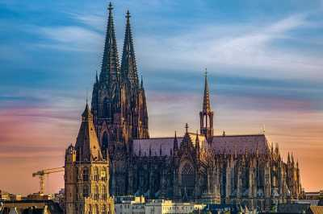
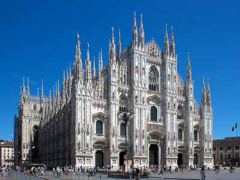
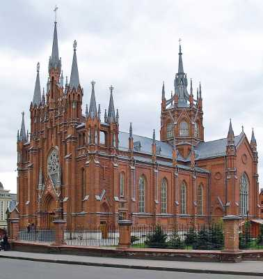
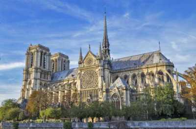
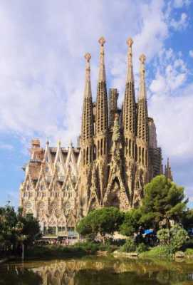
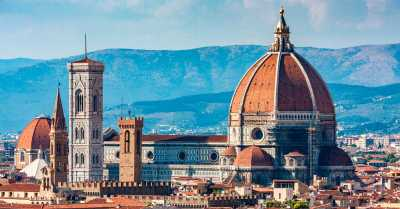
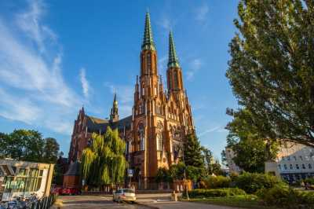
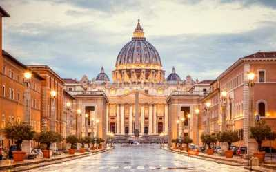
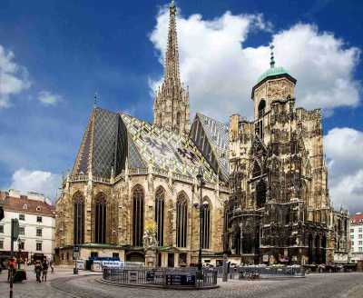

Известни католически катедрали
Кьолнската катедрала
Кьолнската катедрала е римокатолическа църква в Кьолн под патронажа на апостол Петър. Това е катедралата на архиепископията на Кьолн и митрополитската църква на църковната провинция на Кьолн. Кьолнската катедрала е една от най-големите катедрали в готически стил. Строежът ѝ започва през 1248 г. и не е завършен до 1880 г. Някои историци на изкуството наричат Дуомото „перфектната катедрала“ заради нейната еднородност и баланс. От 1996 г. катедралата е част от световното наследство на ЮНЕСКО и е една от най-посещаваните забележителности в Германия.

Кьолнска катедрала
Миланската катедрала
Миланската катедрала или Метрополитската катедрала-базилика на Рождество на Света Богородица е катедралната църква в Милано, Ломбардия, Италия. Посветен на Рождеството на Света Богородица, той е седалище на архиепископа на Милано, понастоящем архиепископ Марио Делпини. Завършването на катедралата отнело близо шест века: строителството започнало през 1386 г., а последните детайли били завършени през 1965 г. Това е най-голямата църква в Италия – по-голямата базилика Свети Петър се намира във Ватикана, суверенна държава.

Миланската катедрала
Катедралата на Непорочното зачатие на Света Дева Мария
Катедралата на Непорочното зачатие на Света Дева Мария е нео-готическа католическа църква в центъра на Москва, която служи като катедрала на Московската архиепископия. Разположена в Централния административен окръг, тя е една от трите католически църкви в Москва и най-голямата в Русия. Строежът на катедралата е одобрен през 1894 г. от Министерството на вътрешните работи на Руската империя. Строителните работи започват през 1901 г. и завършват десет години по-късно. Трикорабна и построена от червени тухли, стилът на катедралата е повлиян от Уестминстърското абатство и Миланската катедрала.

Катедралата на непорочното зачатие - най-голямата католическа катедрала в Русия
Катедралата "Нотр Дам"
Римокатолическата църква Нотр Дам дьо Пари е катедралата на Парижката архиепископия. Църквата, посветена на Дева Мария, е построена между 1163 и 1345 г., което я прави една от най-ранните готически църковни сгради във Франция. Името му на френски е Cathédrale Notre-Dame de Paris (Катедралата на Нотр Дам дьо Пари), често само Нотр Дам. Вътрешността на кораба е дълга 130 метра, широка 48 метра и висока 35 метра; може да побере до 10 000 души. Тънката дървена кула на билото достигаше височина от 93 метра и също така служи като точка за наблюдение от 5-ти ред. Историческият роман на Виктор Юго от 1831 г. „Гърбушкото от Нотр Дам“, голяма част от който се развива в сградата, си проправя път в световната литература. Катедралата претърпя сериозни щети при голям пожар на 15 април 2019 г. На 16 юли 2019 г. френският парламент одобри вярната реконструкция на Нотр Дам.

Катедралата "Нотр Дам"
Катедралата "Саграда Фамилия"
Саграда Фамилия, е недовършена църква в квартал Eixample в Барселона, Каталония, Испания. Това е най-голямата недовършена католическа църква в света. Проектирана от архитекта Антони Гауди (1852–1926), работата му върху Саграда Фамилия е част от обекта на световното наследство на ЮНЕСКО. На 7 ноември 2010 г. папа Бенедикт XVI освещава църквата и я провъзгласява за малка базилика. На 19 март 1882 г. строителството на Саграда Фамилия започва под ръководството на архитект Франсиско де Паула дел Вилар. През 1883 г., когато Вилар подава оставка, Гауди поема поста главен архитект, преобразявайки проекта със своя архитектурен и инженерен стил, съчетаващ готика и криволинейни форми на Арт Нуво. Гауди посвети остатъка от живота си на проекта и е погребан в криптата на църквата. Към момента на смъртта му през 1926 г. по-малко от една четвърт от проекта е завършен.

Катедралата "Саграда Фамилия" в Барселона
Катедралата "Санта Мария Дел Фиоре"
Флорентинската катедрала, официално катедралата Света Мария Дел Фиоре, е катедралата на Флоренция, Италия. Започнала е през 1296 г. в готически стил по проект на Арнолфо ди Камбио и е структурно завършена до 1436 г., като куполът е проектиран от Филипо Брунелески. Екстериорът на базиликата е облицован с полихромни мраморни панели в различни нюанси на зелено и розово, оградени с бяло, и има сложна фасада от 19-ти век в готически стил от Емилио Де Фабрис. Базиликата е една от най-големите църкви в Италия и до разработването на нови структурни материали в модерната епоха, куполът е бил най-големият в света. Той остава най-големият тухлен купол, строен някога.

Катедралата "Санта Мария Дел Фиоре" във Флоренция
Катедралата "св.Флориан от Лорх"
Катедралата Св. Архангел Михаил и Св. Флориан Мъченик е римокатолическата катедрала на епархията Варшава-Прага на булевард Солидарност. Църквата Свети Флориан е построена през 1886-1904 г. по време на Конгреса на Полша в неоготически стил от Юзеф Пий Джеконски на мястото на по-стара църква от 1583 г.. Църквата е взривена от Вермахта през Втората световна война и първоначално не е напълно възстановена. Открит е отново едва през 1972 г. Църквата получава ранга на катедрала през 1992 г. със създаването на епархията Варшава-Прага и също така получава титлата малка базилика през 1997 г. от папа Йоан Павел II, който също я посещава през 1999 г.

Катедралата "св.Флориан от Лорх" във Варшава
Базиликата на св.Петър
Папската базилика Свети Петър във Ватикана или просто базиликата Свети Петър е църква, разположена във Ватикана, който е в рамките на град Рим, Италия. Първоначално е планирано от папа Николай V, а след това от папа Юлий II, за да замени старата базилика Свети Петър, която е построена през четвърти век от римския император Константин Велики. Строежът на настоящата базилика започва на 18 април 1506 г. и завършва на 18 ноември 1626 г. Проектиран основно от Донато Браманте, Микеланджело, Карло Мадерно и Джан Лоренцо Бернини, Свети Петър е най-известното произведение на ренесансовата архитектура и най-голямата църква в света по вътрешни мерки. Тя е описана като "заемаща уникална позиция в християнския свят" и като "най-великата от всички църкви на християнския свят". Католическата традиция твърди, че базиликата е мястото на погребението на Свети Петър, главният сред апостолите на Исус и първият папа. Предполага се, че гробът на Свети Петър е точно под главния олтар на базиликата, известен още като Олтара на изповедта. Поради тази причина много папи са били погребани в Свети Петър от раннохристиянския период.

Базиликата на св.Петър в Рим
Катедралата "св.Стефан"
Катедралата Свети Стефан на виенския площад Щефансплац е катедрала от 1365 г., катедрала от 1469/1479 г. и митрополитна църква на архиепископа на Виена от 1723 г. Римокатолическата катедрала, наричана накратко от виенчани Щефл, е една от забележителностите на Виена. Кръстена е на Свети Стефан, който се смята за първия християнски мъченик. Вторият покровител е Денят на всички светии. Конструкцията е дълга 109 метра и широка 72 метра. Катедралата е една от най-важните готически сгради в Австрия. Части от късната романска сграда-предшественик от 1230/40 г. до 1263 г. все още са запазени и формират западната фасада, оградена от двете кули на езерото, които са високи около 65 метра. Общо катедралата Свети Стефан има четири кули: южната кула е най-високата със 136,4 метра, северната кула не е завършена и е висока само 68 метра. В бивша Австро-Унгария нямаше право да се строи църква по-висока от южната кула на катедралата Свети Стефан. Например катедралата на Непорочното зачатие в Линц е построена два метра по-ниско.

Катедралата "св.Стефан" във Виена